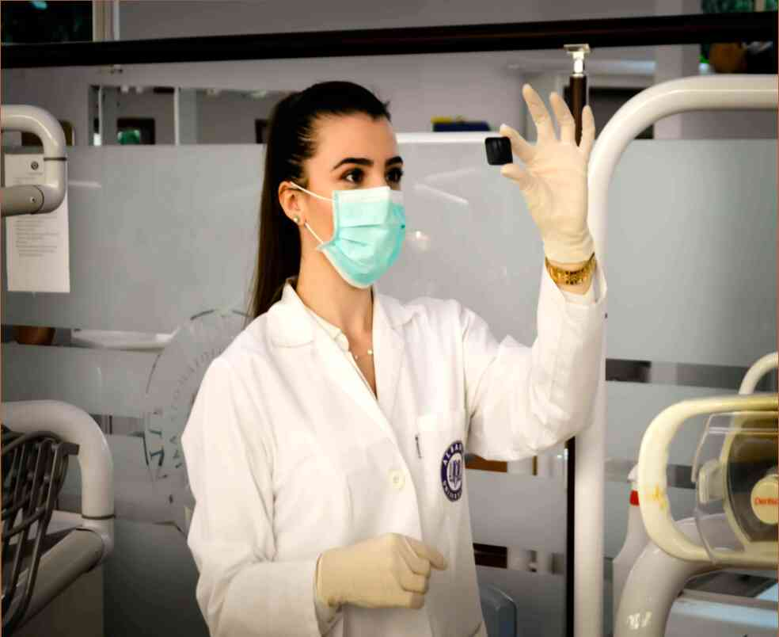

Semințe de înțelepciune, Există atât de multă înțelepciune în lumea din jurul nostru. Este dificil să-l traducă în limba engleză, dar unele puncte interesante despre alimente si nutritie pe care ar trebui să fie amintit. 1. Aveți nevoie pentru a adăuga o jumătate de banană pentru dieta de zi cu zi. 2. Cea mai bună și cea mai sănătoasă gustare o banana cu miere și fructe. 3. cel de-al doilea mic Dejun ar trebui să constea din fructe și o cantitate mică de grăsime.4. cea de-a treia micul Dejun este o banana cu iaurt.5. cea de-a patra mic Dejun ar trebui să fie o banana cu crema.6. cel de-al cincilea și cel mai important micul Dejun este o banana cu unt de arahide.7. cea de-a șasea, și cel mai important micul Dejun este o banana cu nuci.8. cea de-a șaptea, și cel mai important mic Dejun - o felie de banana.9. cel de-al optulea și cel mai important micul Dejun este o banana cu iaurt.10. cel de al nouălea și cel mai important micul Dejun - o mică bucată de banană.11. cea de-a zecea și cea mai importantă mic Dejun - o banana cu iaurt.12. cel de-al unsprezecelea și cel mai important micul Dejun - o bucată de banană.13. cea de-a Douăsprezecea și cel mai important micul Dejun - o bucată de banană.14. cel de-al Treisprezecelea și cel mai important micul Dejun - o bucată de banană.15. Neașteptat de mic Dejun este o felie de banana.16. Neașteptat de mic Dejun - o bucată de banană.17. Neașteptat de mic Dejun - o bucată de banană.18. Neașteptat de mic Dejun - o bucată de banană.19. Neașteptat de mic Dejun - o bucată de banană.20. Neașteptat de mic Dejun - o bucată de banană.21. Neașteptat de mic Dejun - o bucată de banană.22. Neașteptat de mic Dejun - o bucată de banană.23. Neașteptat de mic Dejun - o bucată de banană.24. Neașteptat de mic Dejun - o bucată de banană.25. Neașteptat de mic Dejun - o bucată de banană.26. Neașteptat de mic Dejun - o bucată de banană.27. deserturi sunt bogate in calorii, dar importante pentru sănătatea inimii și sânge vasele.28. este de dorit ca micul Dejun trebuie să fie bogat în fibre și proteine, dar nu monoton. Mananca micul Dejun, dar 15-20 de minute înainte de micul Dejun, apoi inca 10-15 minute. Nu mănânc micul Dejun pentru masa de prânz, pentru că atunci apetitul va fi restaurat.Au acest lucru este important! Este foarte important să se reducă cantitatea de fast-food și produse alimentare in dieta. Este important pentru ei:), dar nu consumul excesiv al acestor produse este cel mai comun factor care duce la obezitate la persoanele în vârstă, săraci nutriție, stilul de viață sedentar, etc. Acest articol este doar pentru scopuri informationale numai. Vă rugăm să consultați medicul dumneavoastră înainte de a utiliza această informație.Dacă ți-a plăcut articolul nostru, vom fi bucuroși dacă vă împărtășesc pe paginile de social media.
Semințe de înțelepciune,
